3.3ml Clear Glass Bottle with Black Spray Pump and Clear Cap. Good for use as a sample.
GBSpry3mlClBlk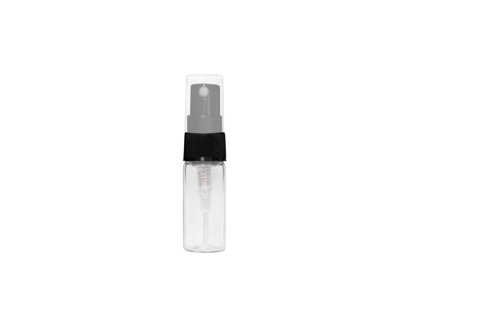
Source fingerprint
SHA-256 4010a54843424f947432363420d864fe520fe259c682e93950a214d660f02445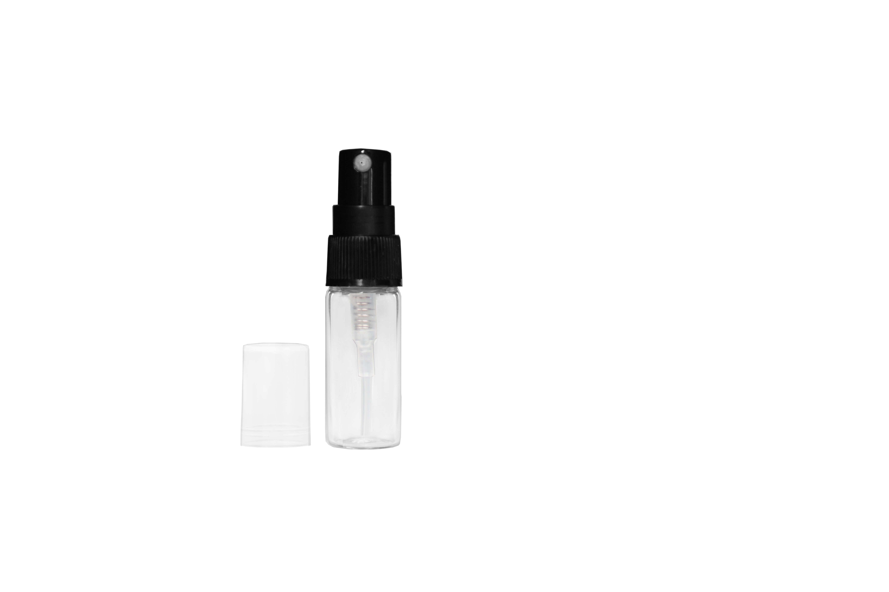
The 38 holds are now grouped by the closure they actually use. Your existing cap-on approvals are preserved.
These are original Photoshop previews. Both views use the same source-pixel zoom. Open an original to inspect it at full size. Preparing these into plates is the next step.


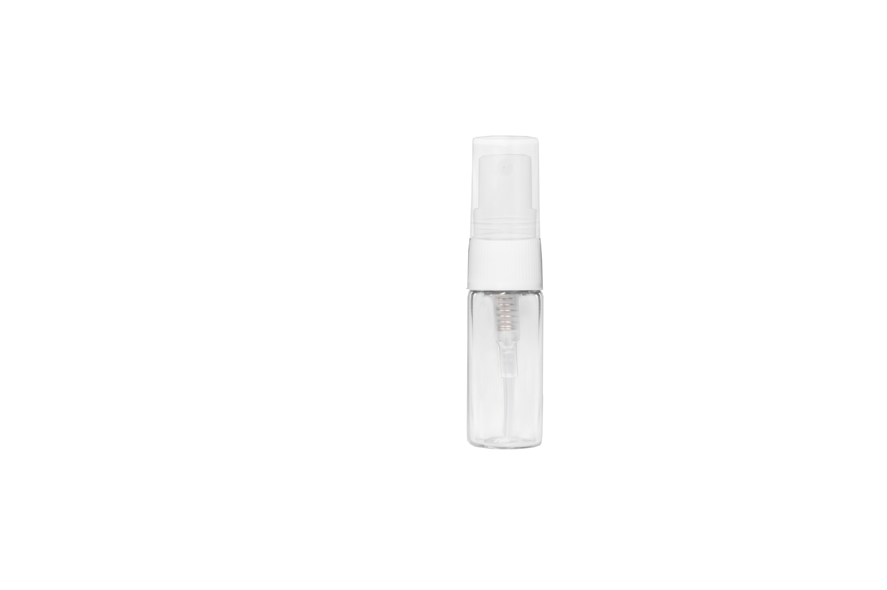
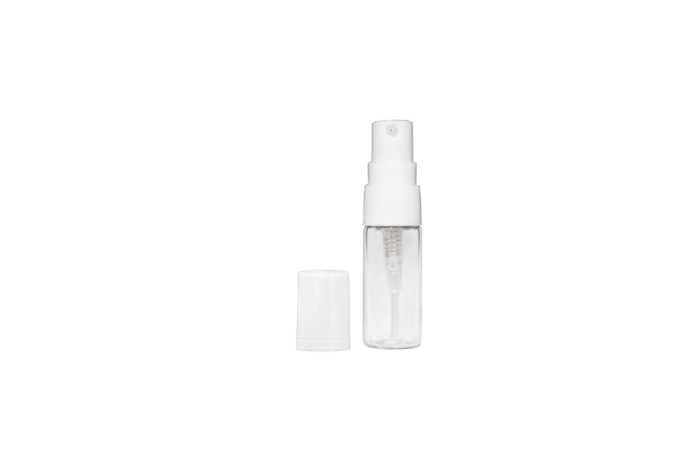
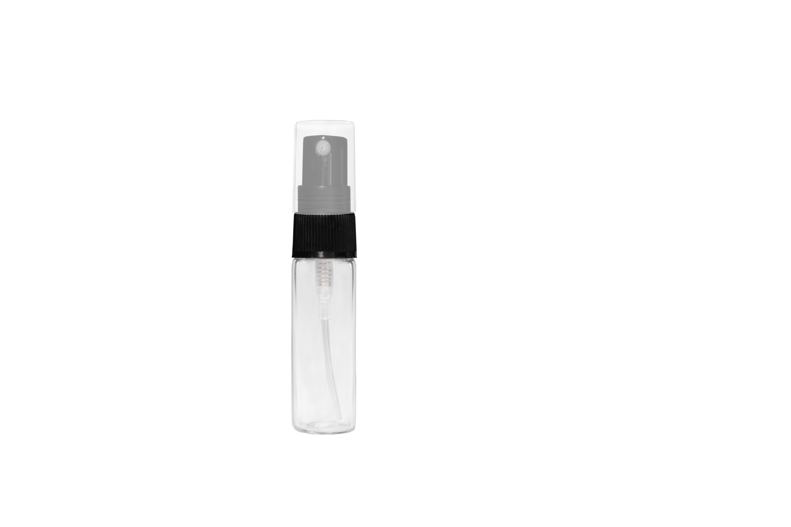
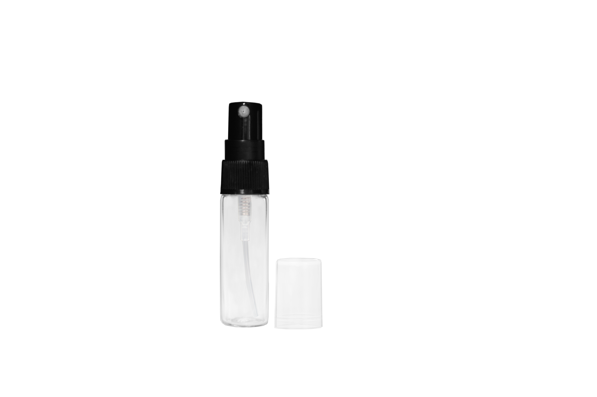
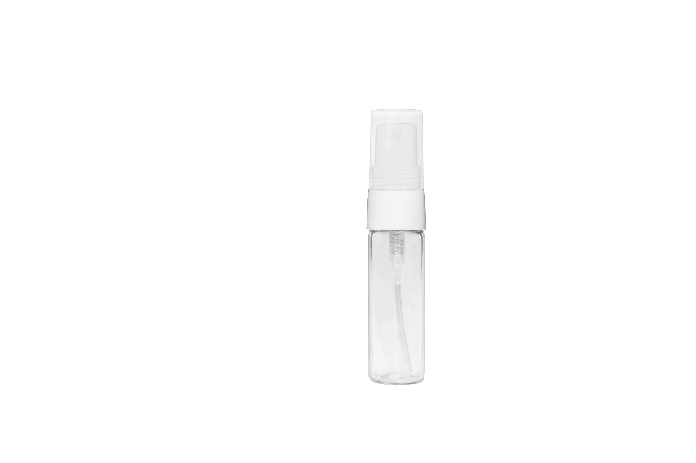
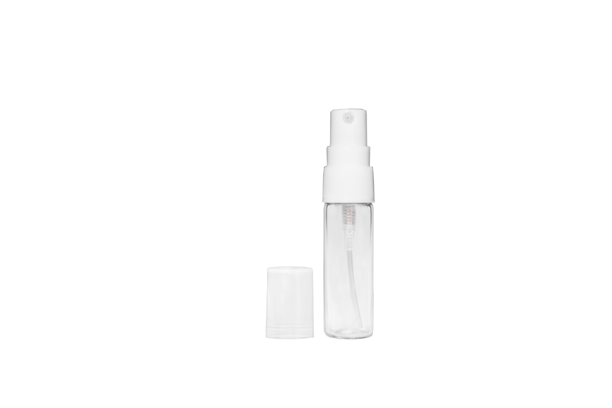
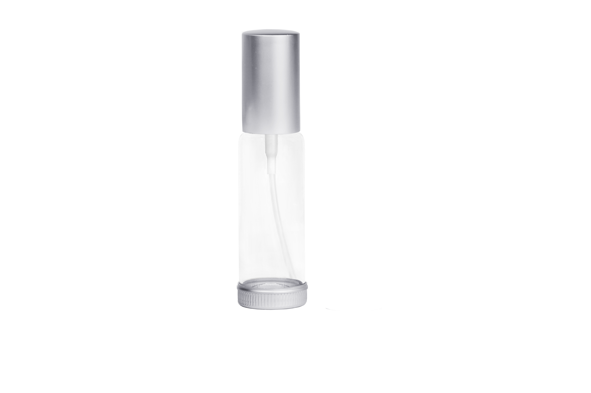
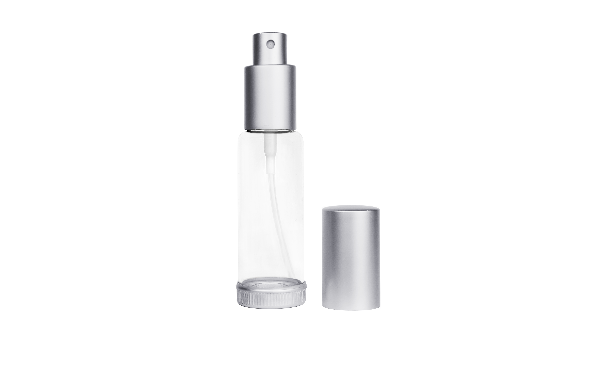
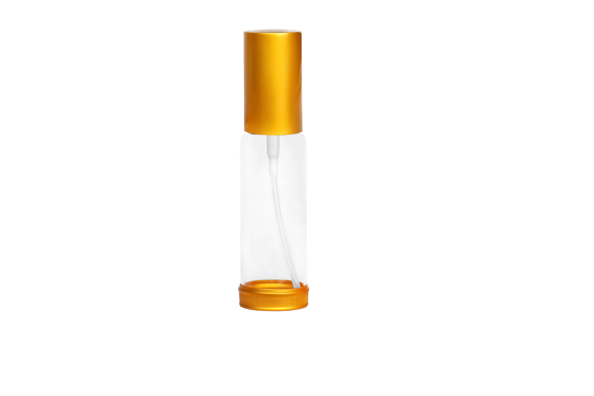
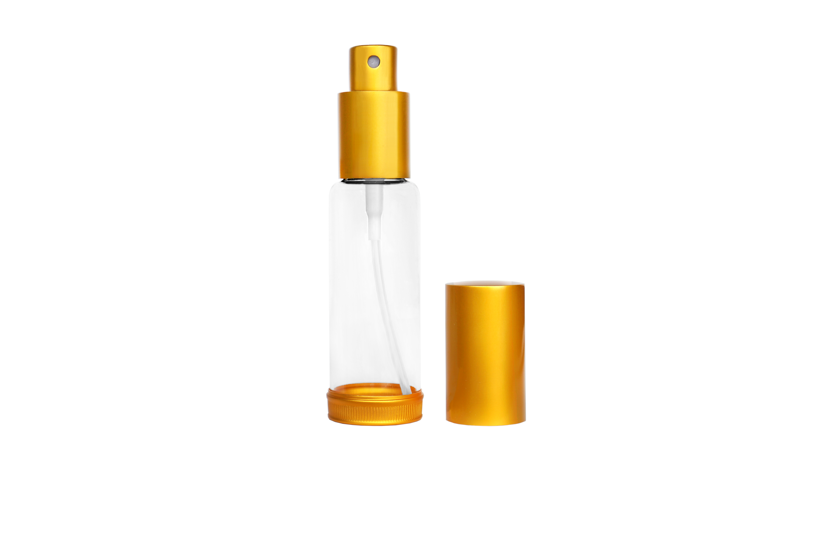
No roller is specified in these product records. The source hold concerns matching the exact short metal cap finish. Related bare-neck source views exist; they do not prove an exact finished-product match.

GBCyl5BlkShShtCatalog describes a plain short cap, with no roller. Related master bottles have genuine bare-neck views, but their ribbed plastic caps are different from these short metal finishes. Exact finish/source mapping is still open.
Existing cap-on appearance approved. Source and technical hold retained.
GBCyl5CuShtCatalog describes a plain short cap, with no roller. Related master bottles have genuine bare-neck views, but their ribbed plastic caps are different from these short metal finishes. Exact finish/source mapping is still open.
Existing cap-on appearance approved. Source and technical hold retained.
GBCyl5GlMattShtCatalog describes a plain short cap, with no roller. Related master bottles have genuine bare-neck views, but their ribbed plastic caps are different from these short metal finishes. Exact finish/source mapping is still open.
Existing cap-on appearance approved. Source and technical hold retained.Current catalog calls this 5 mL; live option 3990 calls it 5.5 mL. Capacity identity needs reconciliation before sharing geometry.

GBCyl5GlShtCatalog describes a plain short cap, with no roller. Related master bottles have genuine bare-neck views, but their ribbed plastic caps are different from these short metal finishes. Exact finish/source mapping is still open.
Existing cap-on appearance approved. Source and technical hold retained.
GBCyl5SlMattShtCatalog describes a plain short cap, with no roller. Related master bottles have genuine bare-neck views, but their ribbed plastic caps are different from these short metal finishes. Exact finish/source mapping is still open.
Existing cap-on appearance approved. Source and technical hold retained.
GBCyl5SlShtCatalog describes a plain short cap, with no roller. Related master bottles have genuine bare-neck views, but their ribbed plastic caps are different from these short metal finishes. Exact finish/source mapping is still open.
Existing cap-on appearance approved. Source and technical hold retained.
GBCylBlu5BlkShShtCatalog describes a plain short cap, with no roller. Related master bottles have genuine bare-neck views, but their ribbed plastic caps are different from these short metal finishes. Exact finish/source mapping is still open.
Existing cap-on appearance approved. Source and technical hold retained.
GBCylBlu5CuShtCatalog describes a plain short cap, with no roller. Related master bottles have genuine bare-neck views, but their ribbed plastic caps are different from these short metal finishes. Exact finish/source mapping is still open.
Existing cap-on appearance approved. Source and technical hold retained.
GBCylBlu5GlMattShtCatalog describes a plain short cap, with no roller. Related master bottles have genuine bare-neck views, but their ribbed plastic caps are different from these short metal finishes. Exact finish/source mapping is still open.
Existing cap-on appearance approved. Source and technical hold retained.
GBCylBlu5GlShtCatalog describes a plain short cap, with no roller. Related master bottles have genuine bare-neck views, but their ribbed plastic caps are different from these short metal finishes. Exact finish/source mapping is still open.
Existing cap-on appearance approved. Source and technical hold retained.
GBCylBlu5SlMattShtCatalog describes a plain short cap, with no roller. Related master bottles have genuine bare-neck views, but their ribbed plastic caps are different from these short metal finishes. Exact finish/source mapping is still open.
Existing cap-on appearance approved. Source and technical hold retained.
GBCylBlu5SlShtCatalog describes a plain short cap, with no roller. Related master bottles have genuine bare-neck views, but their ribbed plastic caps are different from these short metal finishes. Exact finish/source mapping is still open.
Existing cap-on appearance approved. Source and technical hold retained.
GBTallCyl9BlkShShtCatalog describes a plain short cap, with no roller. Related master bottles have genuine bare-neck views, but their ribbed plastic caps are different from these short metal finishes. Exact finish/source mapping is still open.
Existing cap-on appearance approved. Source and technical hold retained.
GBTallCyl9CuShtCatalog describes a plain short cap, with no roller. Related master bottles have genuine bare-neck views, but their ribbed plastic caps are different from these short metal finishes. Exact finish/source mapping is still open.
Existing cap-on appearance approved. Source and technical hold retained.
GBTallCyl9GlMattShtCatalog describes a plain short cap, with no roller. Related master bottles have genuine bare-neck views, but their ribbed plastic caps are different from these short metal finishes. Exact finish/source mapping is still open.
Existing cap-on appearance approved. Source and technical hold retained.
GBTallCyl9GlShtCatalog describes a plain short cap, with no roller. Related master bottles have genuine bare-neck views, but their ribbed plastic caps are different from these short metal finishes. Exact finish/source mapping is still open.
Existing cap-on appearance approved. Source and technical hold retained.
GBTallCyl9SlMattShtCatalog describes a plain short cap, with no roller. Related master bottles have genuine bare-neck views, but their ribbed plastic caps are different from these short metal finishes. Exact finish/source mapping is still open.
Existing cap-on appearance approved. Source and technical hold retained.
GBTallCyl9SlShtCatalog describes a plain short cap, with no roller. Related master bottles have genuine bare-neck views, but their ribbed plastic caps are different from these short metal finishes. Exact finish/source mapping is still open.
Existing cap-on appearance approved. Source and technical hold retained.
GBTallCylFrst9BlkShShtCatalog describes a plain short cap, with no roller. Related master bottles have genuine bare-neck views, but their ribbed plastic caps are different from these short metal finishes. Exact finish/source mapping is still open.
Existing cap-on appearance approved. Source and technical hold retained.
GBTallCylFrst9CuShtCatalog describes a plain short cap, with no roller. Related master bottles have genuine bare-neck views, but their ribbed plastic caps are different from these short metal finishes. Exact finish/source mapping is still open.
Existing cap-on appearance approved. Source and technical hold retained.Catalog capColor says Matte Copper; itemName says matte silver. Approved image appears copper. Preserve this discrepancy until exact-page reconciliation.

GBTallCylFrst9GlMattShtCatalog describes a plain short cap, with no roller. Related master bottles have genuine bare-neck views, but their ribbed plastic caps are different from these short metal finishes. Exact finish/source mapping is still open.
Existing cap-on appearance approved. Source and technical hold retained.
GBTallCylFrst9GlShtCatalog describes a plain short cap, with no roller. Related master bottles have genuine bare-neck views, but their ribbed plastic caps are different from these short metal finishes. Exact finish/source mapping is still open.
Existing cap-on appearance approved. Source and technical hold retained.
GBTallCylFrst9SlMattShtCatalog describes a plain short cap, with no roller. Related master bottles have genuine bare-neck views, but their ribbed plastic caps are different from these short metal finishes. Exact finish/source mapping is still open.
Existing cap-on appearance approved. Source and technical hold retained.
GBTallCylFrst9SlShtCatalog describes a plain short cap, with no roller. Related master bottles have genuine bare-neck views, but their ribbed plastic caps are different from these short metal finishes. Exact finish/source mapping is still open.
Existing cap-on appearance approved. Source and technical hold retained.These are flip-top closures. The original Photoshop sources remain unmatched; no cap-off artwork is being invented.

PbClear4ozFlpWhCatalog and exact live legacy page describe a flip-top bottle, not a roller. Master source is not yet matched. No claim that artwork is absent.
Existing cap-on appearance approved. Source and technical hold retained.
PbClear8ozFlpWhCatalog and exact live legacy page describe a flip-top bottle, not a roller. Master source is not yet matched. No claim that artwork is absent.
Existing cap-on appearance approved. Source and technical hold retained.
PbNat16ozFlpWhCatalog and exact live legacy page describe a flip-top bottle, not a roller. Master source is not yet matched. No claim that artwork is absent.
Existing cap-on appearance approved. Source and technical hold retained.Catalog itemName says Clear; exact live legacy page says natural color, and the approved plate appears translucent natural. This audit does not alter the catalog.
These really are roller products. Their source pairs and appearance approvals already exist. Sizing remains unresolved; one pair also fails alignment.

GBTallCyl9MtlRollBlkDotBoth original source views are already available. Resolve the glass sizing finding.
Existing cap-on appearance approved. Source and technical hold retained.
GBTallCyl9RollBlkDotBoth original source views are already available. Resolve the glass sizing finding and cap-off body alignment.
Existing cap-on appearance approved. Source and technical hold retained.
GBTallCyl9RollBlkShBoth original source views are already available. Resolve the glass sizing finding.
Existing cap-on appearance approved. Source and technical hold retained.
GBTallCyl9RollCuMattBoth original source views are already available. Resolve the glass sizing finding.
Existing cap-on appearance approved. Source and technical hold retained.
GBTallCyl9RollSlShBoth original source views are already available. Resolve the glass sizing finding.
Existing cap-on appearance approved. Source and technical hold retained.Audit: September 13, 2026. 33 master files inspected. Sources and fingerprints are recorded in the audit package. No bottle pixels, approvals, catalog fields, or published assets changed.